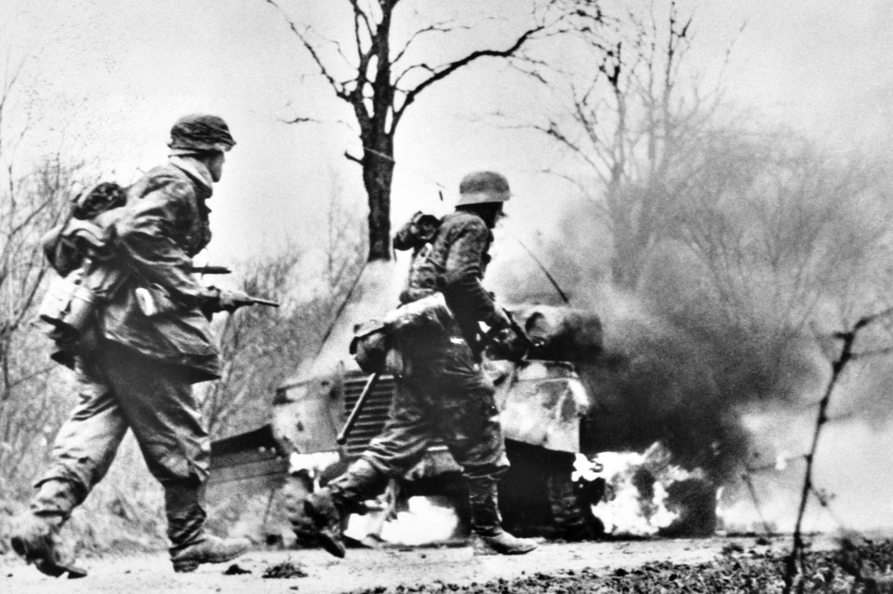

La Batalla de las Ardenas, también conocida como la Ofensiva de las Ardenas o Battle of the Bulge, fue una de las últimas grandes ofensivas alemanas durante la Segunda Guerra Mundial, librada entre diciembre de 1944 y enero de 1945 en los densos bosques de Bélgica, Luxemburgo y Francia. En un intento desesperado por cambiar el curso de la guerra, Hitler lanzó un ataque sorpresa contra las líneas aliadas, buscando dividir sus fuerzas y capturar el estratégico puerto de Amberes. Con cerca de 200,000 soldados y 1,000 tanques, los alemanes aprovecharon el mal clima para impedir la superioridad aérea aliada, logrando avances iniciales significativos y creando un "bulto" en las líneas enemigas. Sin embargo, la feroz resistencia en lugares como Bastogne, donde la 101ª División Aerotransportada resistió heroicamente, y la rápida reorganización de las fuerzas aliadas, lideradas
por el general Patton, detuvieron el avance alemán. Cuando el clima mejoró, la aviación aliada destruyó columnas y suministros enemigos, revirtiendo la ofensiva. Aunque los aliados sufrieron más de 80,000 bajas, los alemanes perdieron alrededor de 100,000 soldados y recursos clave, quedando incapaces de lanzar nuevas ofensivas significativas. Este enfrentamiento marcó el inicio del colapso del Tercer Reich, consolidando el camino hacia la invasión de Alemania, mientras su heroísmo y sacrificio lo convirtieron en un símbolo de resistencia en la guerra. A finales de 1944, las fuerzas aliadas habían logrado importantes avances tras el Día D y la liberación de Francia. Sin embargo, el frente occidental seguía siendo vulnerable en ciertos puntos debido a la gran extensión que debía cubrirse. Hitler, consciente de la superioridad numérica y material de los aliados, planeó un ataque sorpresa que pudiera fracturar sus líneas, retomar la iniciativa y alentar una negociación de paz favorable para Alemania.

El plan alemán consistía en atacar a través de los densos bosques de las Ardenas, una región montañosa ubicada entre Bélgica, Luxemburgo y Francia. Este terreno había sido considerado difícil para operaciones a gran escala, razón por la cual los aliados mantenían allí tropas menos experimentadas. El objetivo principal de los alemanes era avanzar rápidamente hacia el puerto de Amberes, Bélgica, un punto estratégico crucial para el suministro aliado.
La operación, conocida como "Wacht am Rhein" ("Guardia en el Rin"), requería una coordinación extrema. Los alemanes reunieron cerca de 200,000 soldados, 1,000 tanques y vehículos blindados, así como una fuerza aérea considerable, aunque debilitada. Las divisiones Panzer desempeñaron un papel clave en la ofensiva, liderando el avance a través de las líneas aliadas.